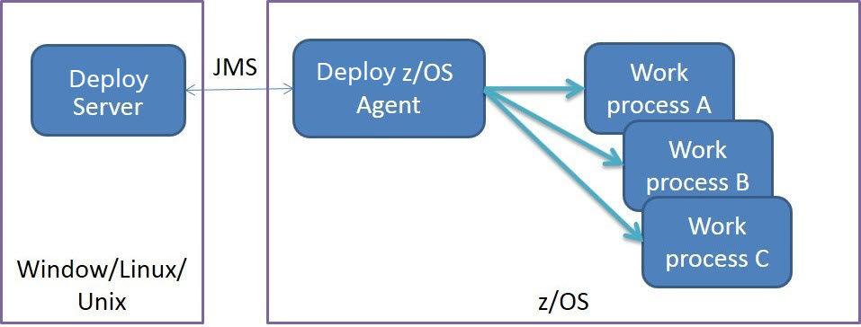

Specific security definitions are used to secure IBM DevOps Deploy (Deploy) functions for
the IBM® z/OS®
environment. To deploy applications to an IBM z/OS environment,
the user accounts on the agent computer must have adequate access permissions. You must also
identify specific directories and data sets to the authorized program facility.
The topics in this section present the security configurations related to the agent started task,
data sets, file systems, user IDs, impersonation and security configurations related to the z/OS
Utility plugin.
Note: This document does NOT cover the Deploy server’s security model and the security configurations related to server agent communication.
Refer to Security configuration related to
z/OS.
Agent started task and agent user ID
The DeployIBM z/OS agent is a long running Java process in the IBM z/OS UNIX System Services. The Deploy server distributes work, known as deploy processes, to an agent to execute. For each step in the
deploy process, the agent starts a separate work process. The work process inherits the agent user
ID’s security environment, unless the process is configured to use impersonation. Figure 1. z/OS Server Agent Architecture

Agent impersonation
The su command is used to impersonate users. This figure shows a deployment
scenario with two logical environments, DEV and TEST, in the same logical partition (LPAR). The
deployment process is configured so that the agent impersonates USERA when deploying to DEV and
USERB when deploying to TEST.Figure 2. z/OS Impersonation
RACFdigital certificates are not supported. Deploy uses keystore and keytool provided by Java to generate and manage certifications to be used for
the agent/server communication.